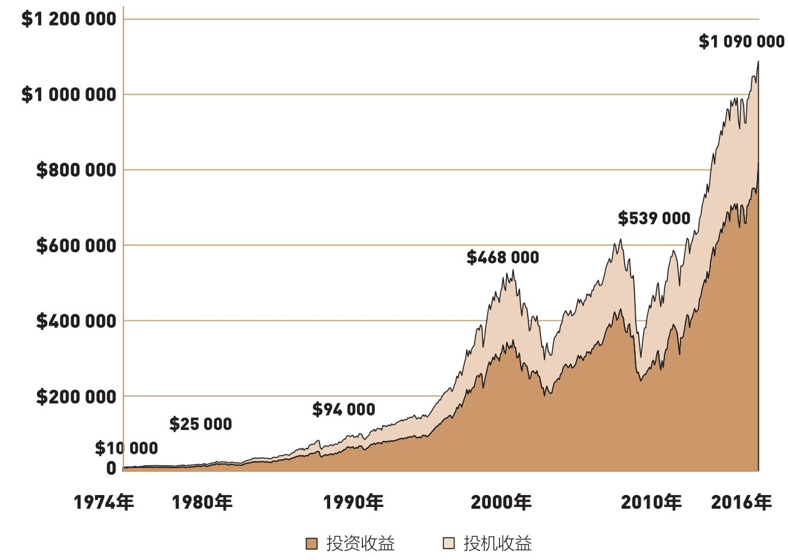
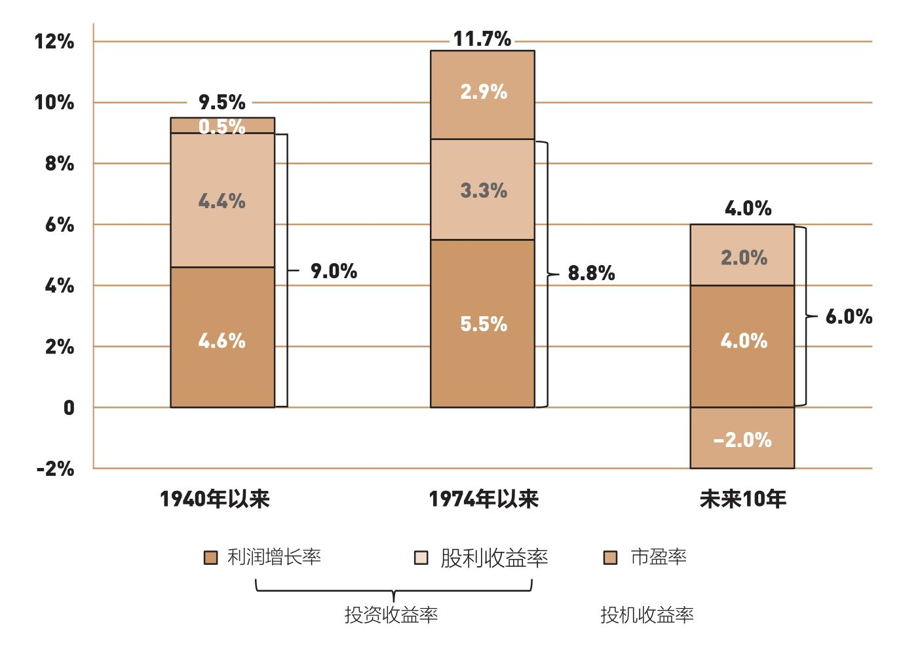
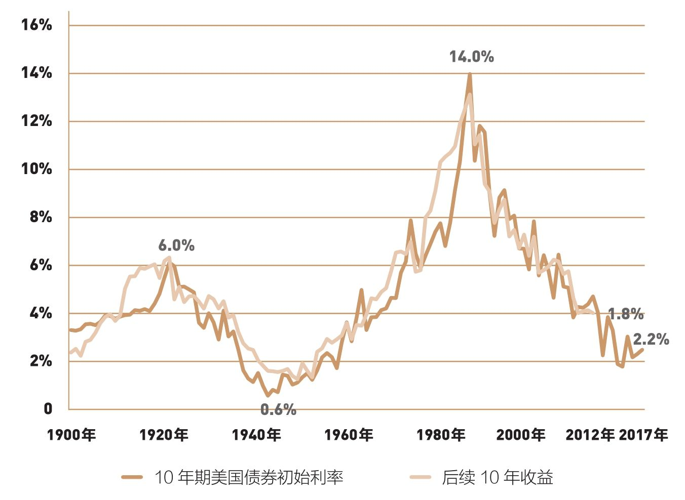
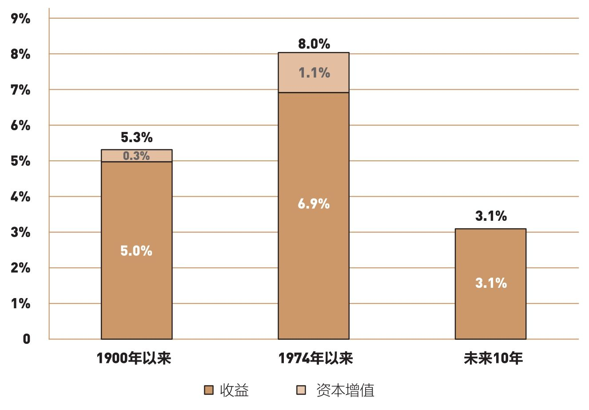
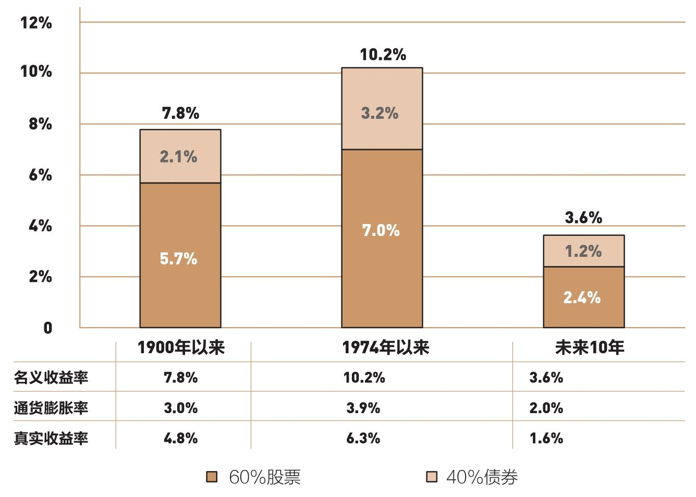

1974年以来，总收益的25%，是由市盈率攀升贡献的。到了低收益率时代，如何逆袭？
未来收益可能低于过去的常态水准，较高的投资成本将会带来糟糕的结果，投资者要如何避免呢？
你应该还记得本书第2章里介绍的原理：长期来看，股票市场收益取决于商业活动，也就是企业的股利收益和利润增长。然而，矛盾的是，1974年9月24日先锋基金创立以来的43年，股市贡献的收益超过了企业赚取的报酬，而且两者之间的差异是美国商业历史之最。
特别是，在这43年里，标准普尔500指数成分股的股利收益和利润合计的年均收益率只有8.8%（其中股利收益率3.3%、利润增长率5.5%），但股票市场提供的年均收益率达到11.7%（见图9-1）。
市场收益中，有2.9%属于投机收益，约占总收益的25%。这项收益率反映投资者上调了对股市的估值，市盈率翻了不止3倍，从7.5倍增长到23.7倍（1900—2016年，投机性收益只占总收益的0.5%，大约只有1974年后的1/5）。
以复利方法计算这些收益会产生一个巨大差额（见图9-1）。在43年的时间里，10 000美元初始投资将会增长到近1 090 000美元，其中约有270 000美元是投机收益，余下的820 000美元则来自股利收益和利润增长。

图9-1 累计投资收益和投机收益,1900—2016年
是的，1974年那令人印象深刻的7.5倍市盈率，来自股市暴跌50%以后的底部。当时市场极度悲观，投资者深陷忧虑。到了2017年年初，市盈率高达23.7倍。这究竟是过度乐观，还是新的经济现实，仍有待观察。
总体来说，过去40多年，股票投资者获取了超额收益，其中投机收益占市场总收益的25%。然而，指望市盈率继续升高、繁荣持续的想法，恐怕有些不切实际。常识和数学告诉我们，股市收益将再度下滑（与1900年以来的9.5%的名义年均收益率对比，见图9-2）。

图9-2 股市总收益率：过去与未来
我在本书首次出版时，曾经用这个标题概述本章内容：当好景不再。当时，我估算2006—2016年这10年的股市年均收益率为7%，而标准普尔500指数的真实收益率与此几乎相同：6.9%（请不要着急鼓掌，因为我低估投机收益的程度，大约等于我高估投资收益的程度）。
我们为什么要保持小心谨慎？因为股市收益的来源告诉我们要小心谨慎。在第2章，我描述了股市收益的三种来源：初始股利收益、利润增长收益（合并起来即为投资收益）和市盈率（投机收益）。
让我们看一下目前的收益来源。首先，目前的股利收益率已经不再是历史上的4.4%，而是2%。以此来看，我们必须接受未来投资收益每年减少2.4%的事实。
至于公司利润，我们可以假设它们会持续（正常情况下）增长，增长率大约相当于GDP的名义增长率，而未来10年的年均GDP名义增长率是4%～5%，低于6%的长期GDP名义增长率。
如果预期被证明合理，那么预期的股市投资收益为6%～7%。我将会保持谨慎估计，因此，未来的年化投资收益率约为6%。
现在来看投机收益。2017年年初，股票市盈率是23.7倍。这个数据根据标准普尔500指数最近一年公布的利润计算。如果预估市盈率在未来10年里保持不变，投资收益可能会维持在6%。
华尔街战略家预估市盈率时，倾向于采用未来一年的预估利润，而不是公布的过去一年的利润。经营利润的计算，不包含非连续性商业行为的核销、坏账之类的项目。这些利润可能实现，也可能不会实现。如果采用预估利润，华尔街估计市盈率只有17倍。不过，我不准备采用这项数据。
我推测，10年后，市盈率可能会下降到20倍或更低。虽然是有依据的猜测，但仍然是猜测。这轮估值回归每年会降低市场收益约2%，致使美国股市仅能维持4%的年收益率。
你不需要完全认同我的看法。如果你认为当前23.7倍的市盈率在未来10年里不会发生变化，那么投机收益将是0，投资收益将等于市场总收益；如果你预期股票市值上涨30倍（我不认同），那么投机收益为1.5%，股市年收益率达到7.5%；如果你认为市盈率将会下降到12倍，投机收益为-7%，那么股市年收益率会下降到-1%。
我的意思是，如果不同意我预测的4%，那么你可以自行评估未来10年的股利收益率、利润增长率和市盈率。这三项数据代表了你对未来10年股票收益的预期。
预估债券的未来收益比预估股票简单许多。为什么？因为股票收益有三个来源，而债券只有单一收益来源：债券发行时的利率。
如果一个人长期持有债券，那么债券的当前利率可以表示预期收益。从历史数据来看，初始利率是评估债券未来收益的可靠指标。事实上，1900年以来，有95%的债券的10年期收益可以参考初始利率（见图9-3）。

图9-3 初始债券利率和后续收益
为什么会这样？因为10年期债券发行人承诺10年后以现金偿还100%的初始本金。对于投资级债券，这个承诺通常得以实现。因此，近乎所有收益都来自利息。是的，在这期间债券的市场价值也会随利率调整而波动，但如果将债券持有到期，那些波动就不再起作用了。
图9-3描述了美国10年期国债的初始利率及其后续10年的收益。注意利率（及后续收益）的一个长周期循环，从1940年0.6%的低点，到1980年14%的高点，然后一路下滑到2012年的1.8%，再反弹到2017年年中的2.2%。
国债的偿付风险最小。债券的偿付风险指债券到期后未被偿付。因此，当前2.2%的利息率明显低估了广义债券市场的未来收益，因为公司债券有较高的偿付风险。我们假定债券投资组合由一半美国10年期国债和一半投资级的长期公司债券组成，后者当前利率为3.9%，基于合理预期，未来10年债券的年收益率是3.1%。
未来10年债券收益很可能像股市收益一样，下降到历史正常水平以下（见图9-4）。1900年以来债券年均收益率是5.3%，而1974年以来债券收益率大幅提高，年均达到8.0%。这种收益率主要受到1982年以来大牛市的影响，利率大跌引发了债券价格上涨。

图9-4 债券总收益：过去与未来
在一个由60%股票和40%债券构成的平衡型投资组合里，可以预期在未来10年里，其扣除成本前的名义年收益率是3.6%。当然，这样的预期可能太高或太低，但它有助于给你的财务规划提供合理的参考。
无论如何，预期的3.6%年收益率都大幅低于这类平衡型组合7.8%的长期平均收益率，以及1974年以来引人注目的10.2%的收益率（见图9-5）。

图9-5 由60%股票和40%债券构建的投资组合收益：过去与未来
当我们把名义收益率转换成真实收益率（去除通胀后），我们将看到一个数值更小，但差异显著的数据：有历史数据记录以来是4.8%；自1974年以来是6.3%；未来10年里可能是1.6%（见图9-5下方）。
2017年中期，一只平衡型组合在未来将获得3.6%的收益率，我们首先假定这是合理预期（不是推测值！）。但是请记住，总体而言，投资者作为一个集体，不可能获取市场全部收益。为什么会这样？因为通过主动型基金投资股市和债券，至少伴随1.5%的年均成本。
在这样的一个环境里，想要计算这个主动型平衡共同基金的潜在收益，只需要简单回忆一下基金成本的算式：名义市场收益率3.6%，减去投资成本1.5%，再减去假定的通货膨胀率2%（略高于金融市场目前估计的未来10年的通货膨胀水平），最终结果等于0.1%。
这看起来有些荒谬，给典型的平衡型基金预计一个近于0的收益率。但是如果你回忆一下第7章的内容，普通平衡型基金投资者将会赚得更少。相关数据都列在那里。
通过对比，在低收益率的环境里，一只低成本平衡型指数基金的年均成本仅有0.1%，却能够贡献1.5%的年收益率，明显高于一只主动型基金。这个数值不够好，但它至少是正数，已经好很多了。
事实上，较低的收益率恰好放大了共同基金过多的成本。为什么？股票基金2%的成本率加上2%的通胀率，可能“仅”消耗了股市名义收益率15%的1/4，或“仅”消耗了10%收益率的2/5。但根据合理预估，如果股票名义收益率是4%，就可能会被成本和通货膨胀全部消耗。
除非基金业大幅降低其管理费、运营费、销售佣金和组合换手率（和其他随之而来的成本），否则，高成本主动型基金将会成为投资者非常糟糕的选择。
投资者不会接受实际收益率为0的主动型基金。股票基金如何避免陷入这种境地呢？未来收益可能低于过去的常态水准，如果继续保持较高的投资成本，将会带来糟糕的结果，投资者要如何避免呢？
以下有五种看似可行的方案：
◆选择一只低成本指数基金，持有股票市场投资组合。
◆选择极低成本、投资组合换手率最小、不收手续费的基金。
◆选择历史业绩最佳的基金。
◆选择近期业绩最佳的基金。
◆咨询专业顾问，请他们来帮助你挑选有可能战胜市场的基金。
你会选择哪个选项呢？请注意：前两种方案的胜算最高，因为无论市场的收益如何，前两种方案几乎都可以确保投资者获利。而后三种方案的胜算很低。在接下来的三章中，我将分别讨论这三种方案各自的局限。
凡是深入研究过金融市场的经济学家、研究员和股市战略家，几乎都和我的想法一致，认为1974年以来的股市繁荣景象恐怕会好景不再。
让我们看看规模最大也最成功的投资管理人之一AQR资本管理公司（AQR Capital Management）的推测：“可预期的投资收益率降低。我们预期股票的真实收益率为4%，债券的真实收益率为0.5%，由60%股票和40%债券构建的投资组合的真实收益率为2.6%（扣除成本前）。”
在GMO公司长期领导者、主要捐赠基金顾问杰里米·格兰瑟姆（Jeremy Grantham）看来，AQR的预测显得极度乐观。在未来7年里，GMO预期股票市场年收益率为-2.7%，债券年收益率为-2.2%，由60%股票和40%债券构建的平衡型组合的真实收益率为-2.5%。
瑞银投资管理公司前总裁、著名注册金融分析师加里·布林森（Gary Brinson）和我看法类似：
“就市场整体而言，所有价值增值之和必然等于0。一个人的收益，就是另一个人的亏损。如果通盘考虑机构投资者、共同基金和私人银行领域，那么在扣除交易成本后，他们的总收益将变为0或负数。
“因此，主动型基金管理者收取的费用应该与被动型基金管理者相同。可实际上，前者的收费是后者的几倍。这种不符合逻辑的现状必须得到改变。”
让我们再听听《金融分析家杂志》（Financial Analysts Journal）编辑理查德·恩尼斯（Richard Ennis）的说法：“目前，在市场利率接近4%（现在更低，接近3%），而股票收益率还不到2%的情况下，很少有人会预测两位数的投资收益率。但遗憾的是，这个时代的固有传统还将影响我们。上万亿在股市涨落中寻求增长的资金，造就了高昂的费用结构。而面对市场效率和高成本的双重挑战，投资者将继续把资产从主动型管理转变为被动型管理……这种转变的根源在于，人们已经越来越深刻地认识到，高成本正在侵蚀优秀管理者的业绩潜能。”